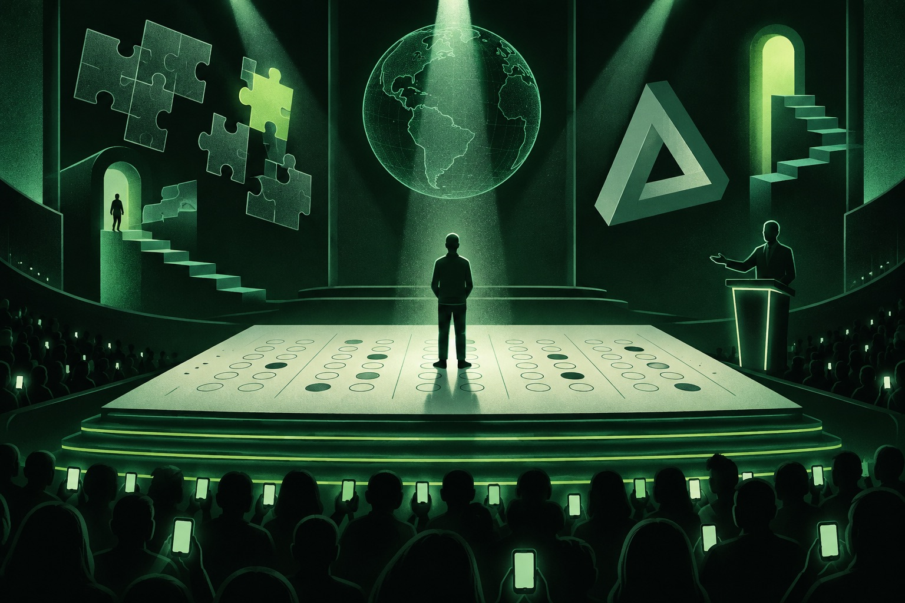
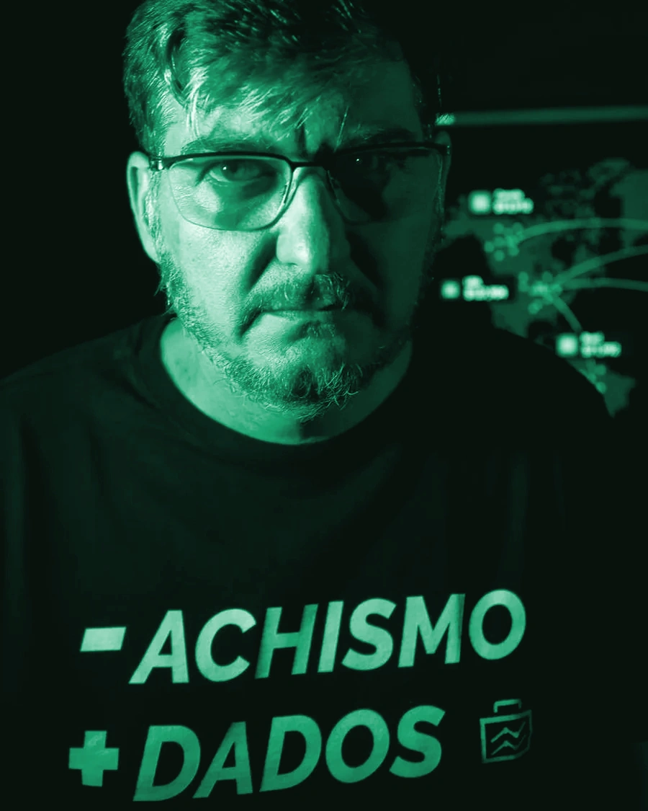

Brazil discovered giftedness. The conversation is still obsessed with IQ.
Executive Summary · What Empirical Data Reveals About Giftedness in Brazil
This observatory compares two empirical sources that are almost never juxtaposed: professional press coverage and spontaneous social media discourse (YouTube, TikTok, Instagram, and X). The subject is the public perception of High Abilities and Giftedness in Brazil from 2021 to 2026. As far as can be empirically verified, no prior study has conducted this cross-analysis at this scale. I observed three principal findings, each thoroughly quantifiable.
1 · Public Interest Surged by 675%
Technically speaking, the topic migrated from academic obscurity into mainstream public dialogue. Annual headlines rose from 53 in 2021 to 411 in 2026. Podcast clips and short-form video across TikTok and Instagram accumulated over 74 million views and 4.4 million likes. That is not a trivial statistical footnote.
2 · The Narrative Focus Shifted, Measurably
In 2021 and 2022, the media agenda was almost exclusively child prodigies and sensationalized IQ scores. By 2024, the empirical center of gravity shifted toward school distress, dual exceptionality (ADHD and autism), and late adult identification. This is not an impression; the mathematical slope of each thematic category confirms it.
3 · The Press and the Public Live in Different Realities
While the press predominantly reports academic achievements, awards, and legislative milestones, over 60% of spontaneous public comments express skepticism, defensive humor, or the paralyzing fear of being labeled 'arrogant'. Does this fear possess foundation? In most cases, no. But its measurable existence indicates a severe deficit in public understanding and psychological accommodation. The reassuring news is that this problem possesses a known solution—which is already more than can be said for quantum gravity.
Where we looked and what we assembled
Four platforms and the press, each fulfilling a designated role. Journalism reports facts. YouTube explains and entertains. TikTok and Instagram forge personal identity. Comments reveal what humans actually think about all of this. Each source excels at a single function, as the telemetry indisputably demonstrates.
Five Sources, Five Structural Roles
Methodological note: items represent topical query returns, not aggregate network volume. Proportional circles compare platforms across each dimension. On Instagram, reach reflects follower count (ring), as the platform conceals view telemetry on images. For X and press, like and view counts were unavailable during collection. Inspect tables · Methodology
From 2021 to 2026, the topic escaped its niche
Annual headlines grew nearly eightfold over the observation window (7.75 times, to be mathematically exact). In 2026, three distinct forces propelled the subject to center stage: the federal special education policy law, iconic child ambassadors, and viral algorithms. These are independent variables, and one must never commit the fallacy of conflating their distinct causal effects.

Methodological caveat: these figures represent search returns validated through topical classification, not exhaustive platform archives. Platform APIs favor recent and viral content; Instagram and TikTok were scraped in 2026. Consequently, they serve to evaluate proportions rather than absolute universe size. The lighter bar marks the peak annual volume per platform. See sampling funnels.
Chronological facts were reconstructed from the harvested corpus of reports, videos, and social posts. Mensa membership figures originate from press releases, which I cannot independently audit, and I state this with absolute transparency.
From "genius" logic trivia to a gifted child testifying before the Federal Senate: nine videos that epitomize the longitudinal shift. Click to view. Out of respect for your network connection (and universal bandwidth conservation), each video stream embeds solely upon request.
The press discusses schools. The public discusses IQ.
I applied an identical 13-theme taxonomy across comments, videos, and news reports from 2021 to 2026. This represents the closest approximation to a controlled experiment this subject allows: the same measurement scale across distinct empirical domains. The spatial divergence between columns illustrates the profound gap between published journalism and public rumination.

How to read: each small-multiple tile features an independent y-axis scale (maximum indicated in the corner) to accentuate directional curvature rather than cross-panel amplitude. Percentage-point shifts compare 2026 against 2021; themes with the greatest delta appear first. YouTube comment dates are annualized approximations. View thematic tables →
The voices steering the conversation
Audience reach, likes, and comments across the most engaging profiles per network. To preserve scientific rigor (and an inaccurate comparison is worse than no comparison at all), we aggregate exclusively on-topic publications released between 2021 and 2026.
Profiles demonstrating peak topical engagement, alongside highlighted institutional actors. To observe their topological network ties, consult the influence map.
Who speaks about what, and how loudly
Two analytical projections illustrating the identical discourse from different dimensional perspectives. Select your metric of choice at the top (reach, likes, or comments) and both models update simultaneously.
How to interpret this diagram: each node represents an individual creator, accompanied by photography, scaled by their aggregate engagement. Color denotes cluster membership. Named circles indicate topical domains. A directional edge connects a creator to a topic whenever at least 1 in every 5 of their publications touches that subject. Feel free to drag the nodes around; this visualization operates via a continuous Newtonian force simulation, which naturally makes it my favorite diagram.
Each nested rectangle corresponds to a topic, with its surface area proportional to its overall presence in the conversation. Inside each domain appear the leading contributors. Click any topic below or inside the diagram to isolate its creators.
Six ways of talking about giftedness
I grouped content creators purely based on the vocabulary distribution of their own publications and video transcripts, without observing their identities. The unsupervised algorithm possessed no knowledge of creator names or follower counts. Nonetheless, the emergent clusters exhibit drastically divergent audiences and reach. Hypothesis: divergent vocabularies attract divergent demographics. Hypothesis confirmed, and not by chance.
Humor, skepticism, and "could I be gifted?"
The comments partition into three distinct populations: those deflecting via self-deprecating IQ humor, those disputing psychometric validity, and those experiencing sudden self-recognition. Below are the twenty most frequent lexical bigrams and the most upvoted comments per topic, with user identities rigorously anonymized.

Most Liked Comments on Instagram
"Am I gifted?" and "why have I always felt this way?"
Beneath the layer of sarcastic remarks lies a demographic experiencing genuine distress. I extracted comments formulating inquiries or describing suffering, utilizing natural language processing to identify their core dilemmas. It is the least humorous segment of the dataset and, by a wide margin, the most socially urgent.

Distribution of Core Inquiries
Every network narrates a distinct story
I applied an identical lexical yardstick across all sources, revealing the functional specialty of each channel. Telemetry on reach, likes, and comments indicates where the audience genuinely congregates. A curious finding: X features substantially higher proportional discourse regarding legislation and Mensa than any other network.
A round table for the top 2%
Far more than an arbitrary cut-off score on a standardized psychometric test: why living and dialoguing among intellectual peers constitutes a critical pillar of mental health and social accommodation.

What is Mensa and why does it exist? Mensa was founded in 1946 in Oxford, immediately following the Second World War, by barristers and scholars Roland Berrill and Lancelot Ware. The premise was, by any objective standard, extraordinarily ambitious: to convene individuals of superior cognitive ability regardless of race, creed, socio-economic origin, or political dogma, placing intellect in the service of peace and unrestricted ideational exchange. Etymological precision: the term derives from the Latin mensa ("table"), symbolizing an egalitarian round table reminiscent of Arthurian lore, wherein no individual occupies the head, no hierarchy exists, and every participant's intellectual contributions carry identical weight.
Elementary arithmetic dismantles the myth of elitism: 2% represents a substantial population. In popular media and television, Mensa membership is frequently trivialized as a vanity badge or admission into an occult society of demigods. Mathematics, indifferent to human prejudice, reveals a radically different picture. The sole qualification is scoring at or above the 98th percentile on a standardized, proctored psychometric examination. In a nation of 215 million citizens, this equates to over 4.3 million eligible Brazilians. That constitutes a populace equivalent to the entire nation of New Zealand, distributed across every socio-economic stratum, vocation, and geographic precinct. Tragically, the overwhelming majority live and perish without ever obtaining a formal clinical diagnosis.
Why congregating among intellectual peers is vital. Setting aside psychometric scores, Mensa and kindred advocacy organizations address a profound clinical reality: the mental health necessity of peer conviviality. Twice-exceptional and gifted individuals frequently endure chronic loneliness, severe childhood ostracism, family incomprehension, and exhausting self-censorship—deliberately slowing their cognitive tempo to avoid perceived arrogance. In an intellectual sanctuary where processing speed, hyper-fixations, abstract humor, and acute sensory-emotional depth require zero prior justification, communication no longer requires constant semantic translation. This is not elitist privilege; it is psychological accommodation and, in countless instances, emotional survival.
Reported Membership Growth
Topical Presence Share
Percentage of items mentioning Mensa per platform (2021–2026 for comments; full dataset for others).
Top Themes Among Comments Mentioning Mensa
Official Mensa Institutional Reach
How this observatory was engineered
Why monitoring digital networks matters, how we deployed artificial intelligence to transcribe speech and classify discourse, and what this research cannot formally conclude.
Temporal Scope (2021 to 2026). The six-year chronological window captures the historical turning point of giftedness in Brazil: the post-pandemic paradigm, the explosion of neuroscience videocasts, the viralization of online test checklists, and the enactment of the National Special Education Policy.
Why Monitor Social Media? Traditional press reports prodigies, academic studies, and legislative enactments. However, it is inside comment threads and short-form videos that everyday citizens express themselves without institutional censorship: voicing suspicions of neurodivergence, fear of ostracism, classroom trauma, and late adult diagnosis anxiety.
Harvested Empirical Dataset. 80,809 YouTube comments, 16,795 Instagram comments, and 1,257 replies on X. 353 long-form YouTube videos and 1,464 TikTok videos (517 strictly on-topic with complete verbatim speech transcription). 1,478 Instagram posts (458 on-topic), 427 X posts, 1,264 investigative news reports, and 210 academic journal articles.
Artificial Intelligence Pipeline. Audio streams from TikTok and YouTube videos were transcribed using OpenAI Whisper. Each item was then classified into 13 transversal thematic categories via natural language processing models. Comments formulating inquiries or personal distress disclosures underwent semantic categorization to map the top 10 existential dilemmas.
Creator Clustering. I applied unsupervised k-means clustering directly to the vocabulary distribution of each active creator. Without supervision, the mathematical model identified 6 distinct narrative clusters shaping Brazilian discourse.
Privacy & Research Ethics. All public comment authors were rigorously and permanently anonymized. Only verified public creators, media outlets, and registered institutions are cited by name.
Review the complete technical report and decision tree on the Methodology page →
Data science in the service of clarity
Meet the researcher behind Giftedness Radar and his initiatives for high-ability workplace inclusion.

Aislan Greca
Aislan Greca has worked for over two decades at the intersection of strategic communication, open data intelligence, and cultural transformation. His specialization: converting massive volumes of intricate, heterogeneous data into accessible intelligence, enabling individuals and organizations to make decisions grounded in empirical evidence rather than subjective impressions.
Giftedness was identified in his adult life through formal neuropsychological assessment. This provided direct experiential understanding of the systemic challenges faced by high-ability individuals in corporate environments: cognitive asynchrony, leadership incomprehension, and the unjust label of being 'difficult' or 'arrogant'.
Recognizing a glaring void in Brazilian corporate discussions, he established and coordinates the LinkedIn community Talentos Ocultos: Superdotação no Ambiente de Trabalho (Hidden Talents: Giftedness in the Workplace). The group brings together gifted professionals, executives, and HR leaders with two declared missions: dismantling harmful stigmas and treating neurodivergence as a powerful collaborative asset.